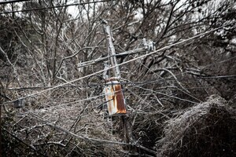
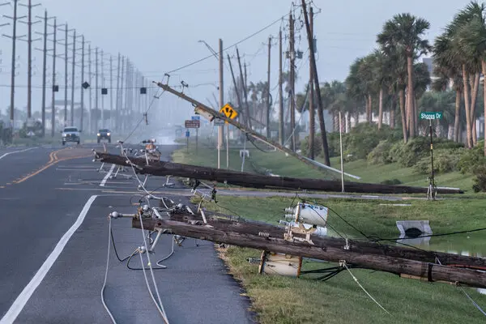

AfterMath
The consequences of the Texas power crisis were catastrophic. Between February 14 and 19, roughly 4.5 million homes and businesses lost electricity. Many lost water service as pipes burst and treatment plants failed. At least 240 people died from hypothermia, carbon monoxide poisoning, and medical equipment failures. Economic damages were estimated between $80 billion and $130 billion, making it one of the costliest natural-disaster-related energy failures in U.S. history.
Public anger mounted as reports revealed that the crisis had been forewarned. After a similar freeze in 2011, federal regulators had recommended that Texas power plants and gas suppliers winterize equipment, but compliance was voluntary, and few acted on the advice. Politically, the fallout was immediate. Top ERCOT executives resigned, lawsuits were filed, and legislative hearings exposed decades of policy neglect.
Governor Greg Abbott called for sweeping reforms, while the Texas Legislature passed Senate Bill 3 in June 2021, mandating mandatory winterization, improved communication systems, and stronger oversight of ERCOT’s operations. At a national level, the event reignited debate over energy market structures, grid interconnections, and climate resilience, prompting calls to better integrate Texas’s largely independent grid with neighboring systems.
